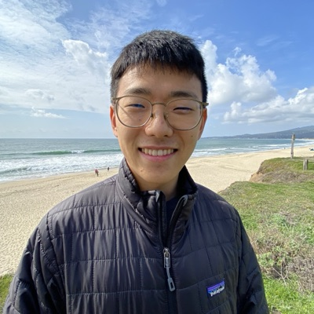

Hi there! I'm a postdoctoral fellow in the Greenbaum Lab and the Balachandran Lab at Memorial Sloan Kettering Cancer Center, where my research involves understanding the immunological response following personalized cancer vaccines, as well as more theoretical problems related to the evolution of transposable elements.
Prior to this, I completed my PhD in Applied Physics with Benjamin Good at Stanford University. My PhD research focused on quantifying the dynamics of bacterial recombination—a form of horizontal gene transfer within the same species—in the human gut microbiome [1, 2, 3].
I also co-led a project on the deep history of the human gut microbiome, where the computational and population genetic methods I developed helped uncover patterns of prehistoric global co-migration of gut bacteria with humans [4]: many microbial lineages split as human populations spread out of Africa and into the Americas, and are now vanishing from industrialized populations.
Prior to graduate school, I studied physics, math and computer science at University of Illinois at Urbana-Champaign. I had a lot of fun learning about the renormalization group [5] & biophysics [6, 7] under the guidance of Nigel Goldenfeld.